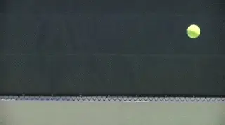
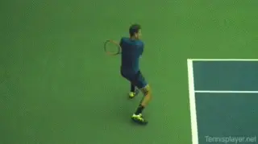
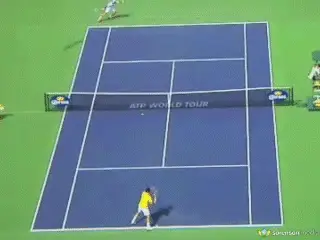

The Myth of Hitting Around the Ball¶
John Yandell¶
You hear it from teaching pros and television commentators. "Get around the ball." Or "Hit the outside of the ball."
How would that even be possible? If you literally hit the outside of the ball wouldn't you send it into the side fence?
Or is that phrase a metaphor for something else more subtle? Let's look and see. If we look closely at the angle of the racket face at contact, it opens up a way for learning to hit placements naturally and with more accuracy.

If you really hit the side of the ball it would go toward the sideline.
View From Above
In the last year we've added a section to our High Speed Stroke Archives filmed from almost directly above the court (link.) It was at a challenger event at the San Francisco Tennis Club and includes some high level players such as Francis Tiafoe, Reilly Opelka and Vasek Pospisil. The footage gives a new perspective on the path of the racket. Filmed at 240 frames per second, it allowed us to see the ball on the strings and the orientation of the racket head in the critical milliseconds before, during, and after contact. The forward swing on a 3D curve, inside out, upward, outward, and back across.
As we have seen in our previous studies (link), a key point---among many-- is that the path of the swing is on a three dimensional curve. It moves from the inside of the body outward toward the contact. At the same time it is moving upward and outward toward the opponent.
When you watch the swing patterns in high speed video, you can see that the idea of some sudden or radical shift in the swing to "hit the outside of the ball" is ridiculous.
What you can see in the high speed footage though are some small differences in the angle of the racket head at contact, depending on shot placement. So let's take a look at those on forehands and backhands hit crosscourt and down the line, and also at the differences hitting inside out and inside in.
The Racket Head and the Target Line
What will see is the racket can strike the ball at a slight diagonal depending on the shot. Possibly this could be considered hitting the ball partially on the outside - at least on certain balls. But a better way of thinking of it is that the player is aligning the angle of the racket head with the target line.
Tiafoe Forehand
Let's start with two Francis Tiafoe forehands. The first is down the line and the second is crosscourt. If you look at them back to back from the forward swing to the contact, it's impossible to see a real difference in the path or the shape of the swing, even at 240 frames per second or 8 to 1 slow motion.
Both swings follow the 3D curve we just discussed. No way either shot is hit with the racket somehow going around the ball. But let's freeze the key moments.
Even in 8 to 1 slow motion it's impossible to see significant differences in the swing shape down the line or crosscourt.
Both swings are coming from inside out. About 2/10s of a second before contact, the racket head is still coming from the inside. Neither one is going to hit the side of the ball.
But look at the slight differences at the actual contact point. These are in the angle of the racket face, and the angle of the racket face is determining the shot line.
In the down the line shot, the racket face is virtually perpendicular to the sideline. In the crosscourt shot it's a few degrees ahead. In both cases the racket face is aligned with the shot line.
So on the crosscourt shot, this means the racket face isn't completely behind the line of the oncoming ball. Put another way it's striking the ball slightly to the right or outside of the ball's center line. If want to insist on calling this hitting around the ball, go ahead.
There might be slightly more forward wrist flex on the crosscourt. The contact might also be marginally further in front. But there is no dramatic change in the path of the racket before contact.
This makes perfect sense when you consider the geometry of the court. A difference in the angle of the ball coming off racket face of something like 10 degrees or less is the difference in hitting the two corners of the court.
That appears to be something close to the difference in angle we see in Tiafoe's two forehands. But no doubt in both cases the racket face is coming from mostly right behind the ball in the milliseconds before contact. It's not coming from the outside in any meaningful sense.

The backhand, as with the forehand, has basically the same swing shape with slightly different racket head alignment at contact.
Pospisil Backhand
So let's look at the same issue on the backhand, this time by looking at high speed footage of Vasek Pospisil. Again do you want to hit around the ball, especially on the crosscourt?
No. What we see is the same relationship between the racket face and the shot line. The racket and hand are again coming from the inside following the shape of the swing arc to contact. The difference at contact is again just a few degrees.
On the down the line shot, the racket face is close to parallel with the baseline. On the crosscourt the racket tip is angled a bit more forward.
You don't see a significant difference in the shape of the swing. There is probably, as with the Tiafoe forehands, a slight difference in the timing of the contact, with the crosscourt being slightly earlier and the actual contact point slightly more in front.
Opelka Inside Forehands
You might think if there was any ball you needed to "get around" it would be the inside in forehand. It's likely coming to you on a crosscourt diagonal. To go inside in means a more radical change in the trajectory compared to the simpler variations in hitting crosscourt or down the line.
See the inside out swings and the slight differences in the racket face angle at contact.
Yet the video shows the exact same relationships on the inside balls. Going inside out,Opelka aligns the racket face directly behind the target line, angled back a few degrees from parallel to the baseline.
On the inside in ball, the racket face is also aligned with the target line, this time basically square or parallel to the baseline and the net. Again you see the inside out swing path.
So what does all this mean for you, if anything? That the way of changing ball direction is not by trying to hit the side of the ball.
Instead, the footage suggests something simpler and more powerful, a way of bringing the contact point and the placement into alignment. This is to visualize the shot line. And then to visualize the racket at contact traveling along the shot line.
You can make mental pictures of the sequences. Imagine the flight of the shot you are trying to hit. Then imagine the racket tracing that path in the forward swing.
[As we know the actual swing will only be closely aligned with the shot path at the critical moment of contact. The imagery is an over compensation in that sense.]

Visualize the racket face traveling along the intended shot line.
My belief is this is the way the great players play. Rarely can they give coherent explanations of how they produce their shots. How do they then decide on intent and communicate that to the ball? I believe it is through natural, subconscious imagining.
As John McEnroe once said, "Sometimes I see a shot flash across my mind, then I hit it."
This may happen naturally for high level players, but it's also a technique that you can consciously cultivate. Try pre-visualizing the shot line you want as you start your forward swing and see if, with practice, it doesn't have a magical effect on your ball control. Overtime it might become as natural and automatic as for elite players.This is a much better idea than trying to manipulate your swing in the impossible quest to hit the side of ball.

John Yandell is widely acknowledged as one of the leading videographers and students of the modern game of professional tennis. His high speed filming for Advanced Tennis and TPA have provided new visual resources that have changed the way the game is studied and understood by both players and coaches. He has done personal video analysis for hundreds of high level competitive players, including Justine Henin-Hardenne, Taylor Dent and John McEnroe, among others.
In addition to his role as Editor of TPA he is the author of the critically acclaimed book Visual Tennis. The John Yandell Tennis School is located in San Francisco, California.
← Is Don Budge's Forehand Good Enough for You? | Advanced Tennis Index | Read →